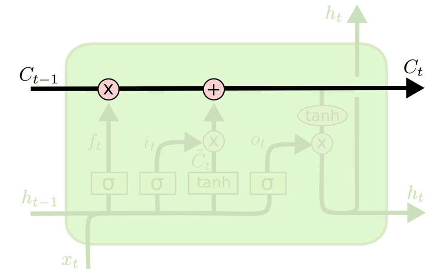
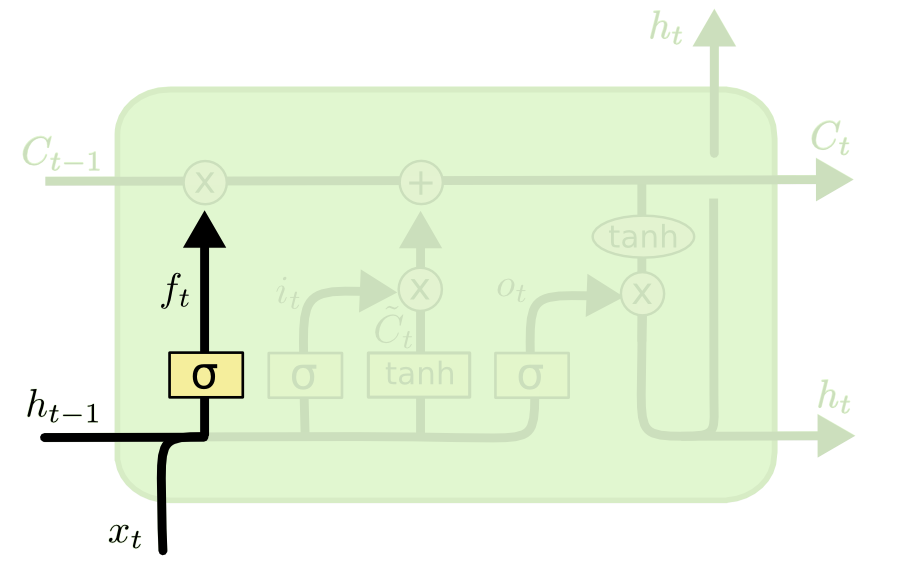
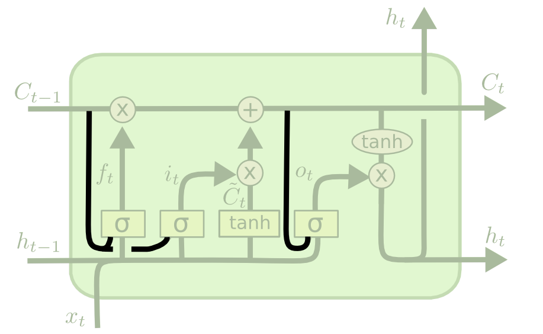
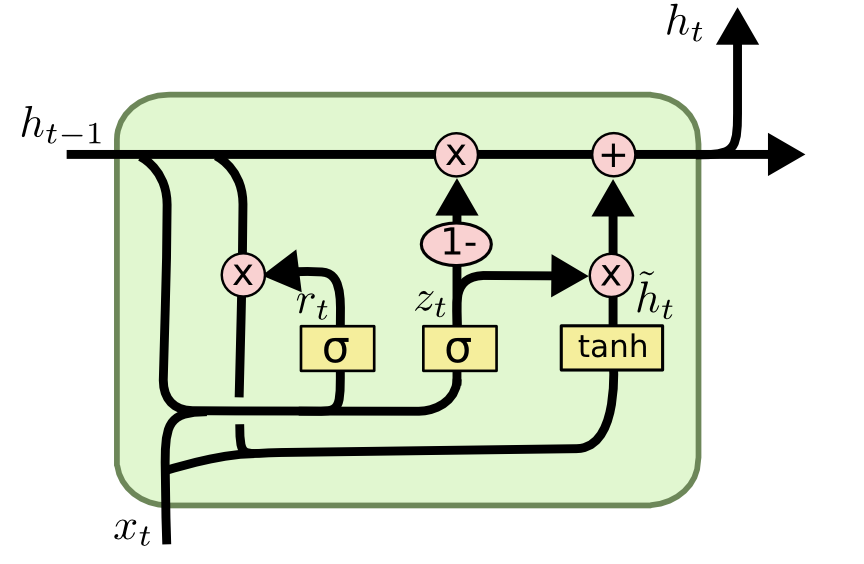

Recurrent neural networks
Recurrent neural networks
Problem with feedforward neural networks
Feedforward neural networks learn to associate an input vector to an output.
\mathbf{y} = F_\theta(\mathbf{x})
If you present a sequence of inputs \mathbf{x}_0, \mathbf{x}_1, \ldots, \mathbf{x}_t to a feedforward network, the outputs will be independent from each other:
\mathbf{y}_0 = F_\theta(\mathbf{x}_0) \mathbf{y}_1 = F_\theta(\mathbf{x}_1) \dots \mathbf{y}_t = F_\theta(\mathbf{x}_t)
Many problems depend on time series, such as predicting the future of a time series by knowing its past values:
x_{t+1} = F_\theta(x_0, x_1, \ldots, x_t)
Example: weather prediction, financial prediction, predictive maintenance, natural language processing, video analysis…
A naive solution is to aggregate (concatenate) inputs over a sufficiently long window and use it as a new input vector for the feedforward network.
\mathbf{X} = \begin{bmatrix}\mathbf{x}_{t-T} & \mathbf{x}_{t-T+1} & \ldots & \mathbf{x}_t \\ \end{bmatrix}
\mathbf{y}_t = F_\theta(\mathbf{X})
- Problem 1: How long should the window be?
- Problem 2: Having more input dimensions increases dramatically the complexity of the classifier (VC dimension), hence the number of training examples required to avoid overfitting.
Recurrent neural network
A recurrent neural network (RNN) uses it previous output as an additional input (context). All vectors have a time index t denoting the time at which this vector was computed.
The input vector at time t is \mathbf{x}_t, the output vector is \mathbf{h}_t:
\mathbf{h}_t = \sigma(W_x \times \mathbf{x}_t + W_h \times \mathbf{h}_{t-1} + \mathbf{b})
\sigma is a transfer function, usually logistic or tanh. The input \mathbf{x}_t and previous output \mathbf{h}_{t-1} are multiplied by learnable weights:
- W_x is the input weight matrix.
- W_h is the recurrent weight matrix.

One can unroll a recurrent network: the output \mathbf{h}_t depends on the whole history of inputs from \mathbf{x}_0 to \mathbf{x}_t.
\begin{aligned} \mathbf{h}_t & = \sigma(W_x \times \mathbf{x}_t + W_h \times \mathbf{h}_{t-1} + \mathbf{b}) \\ &\\ & = \sigma(W_x \times \mathbf{x}_t + W_h \times \sigma(W_x \times \mathbf{x}_{t-1} + W_h \times \mathbf{h}_{t-2} + \mathbf{b}) + \mathbf{b}) \\ &\\ & = f_{W_x, W_h, \mathbf{b}} (\mathbf{x}_0, \mathbf{x}_1, \dots,\mathbf{x}_t) \\ \end{aligned}
A RNN is considered as part of deep learning, as there are many layers of weights between the first input \mathbf{x}_0 and the output \mathbf{h}_t. The only difference with a DNN is that the weights W_x and W_h are reused at each time step.

BPTT: Backpropagation through time
The function between the history of inputs and the output at time t is differentiable: we can simply apply gradient descent to find the weights! This variant of backpropagation is called Backpropagation Through Time (BPTT). Once the loss between \mathbf{h}_t and its desired value is computed, one applies the chain rule to find out how to modify the weights W_x and W_h using the history (\mathbf{x}_0, \mathbf{x}_1, \ldots, \mathbf{x}_t).
Let’s compute the gradient accumulated between \mathbf{h}_{t-1} and \mathbf{h}_{t}:
\begin{aligned} \mathbf{h}_{t} & = \sigma(W_x \times \mathbf{x}_{t} + W_h \times \mathbf{h}_{t-1} + \mathbf{b}) \\ \end{aligned}
As for feedforward networks, the gradient of the loss function is decomposed into two parts:
\frac{\partial \mathcal{L}(W_x, W_h)}{\partial W_x} = \frac{\partial \mathcal{L}(W_x, W_h)}{\partial \mathbf{h}_t} \times \frac{\partial \mathbf{h}_t}{\partial W_x}
\frac{\partial \mathcal{L}(W_x, W_h)}{\partial W_h} = \frac{\partial \mathcal{L}(W_x, W_h)}{\partial \mathbf{h}_t} \times \frac{\partial \mathbf{h}_t}{\partial W_h}
The first part only depends on the loss function (mse, cross-entropy):
\frac{\partial \mathcal{L}(W_x, W_h)}{\partial \mathbf{h}_t} = - (\mathbf{t}_{t}- \mathbf{h}_{t})
The second part depends on the RNN itself:
\begin{aligned} \mathbf{h}_{t} & = \sigma(W_x \times \mathbf{x}_{t} + W_h \times \mathbf{h}_{t-1} + \mathbf{b}) \\ \end{aligned}
The gradients w.r.t the two weight matrices are given by this recursive relationship (product rule):
\begin{aligned} \frac{\partial \mathbf{h}_t}{\partial W_x} & = \mathbf{h'}_{t} \times (\mathbf{x}_t + W_h \times \frac{\partial \mathbf{h}_{t-1}}{\partial W_x})\\ & \\ \frac{\partial \mathbf{h}_t}{\partial W_h} & = \mathbf{h'}_{t} \times (\mathbf{h}_{t-1} + W_h \times \frac{\partial \mathbf{h}_{t-1}}{\partial W_h})\\ \end{aligned}
The derivative of the transfer function is noted \mathbf{h'}_{t}:
\mathbf{h'}_{t} = \begin{cases} \mathbf{h}_{t} \, (1 - \mathbf{h}_{t}) \quad \text{ for logistic}\\ (1 - \mathbf{h}_{t}^2) \quad \text{ for tanh.}\\ \end{cases}
If we unroll the gradient, we obtain:
\begin{aligned} \frac{\partial \mathbf{h}_t}{\partial W_x} & = \mathbf{h'}_{t} \, (\mathbf{x}_t + W_h \times \mathbf{h'}_{t-1} \, (\mathbf{x}_{t-1} + W_h \times \mathbf{h'}_{t-2} \, (\mathbf{x}_{t-2} + W_h \times \ldots (\mathbf{x}_0))))\\ & \\ \frac{\partial \mathbf{h}_t}{\partial W_h} & = \mathbf{h'}_{t} \, (\mathbf{h}_{t-1} + W_h \times \mathbf{h'}_{t-1} \, (\mathbf{h}_{t-2} + W_h \times \mathbf{h'}_{t-2} \, \ldots (\mathbf{h}_{0})))\\ \end{aligned}
When updating the weights at time t, we need to store in memory:
- the complete history of inputs \mathbf{x}_0, \mathbf{x}_1, … \mathbf{x}_t.
- the complete history of outputs \mathbf{h}_0, \mathbf{h}_1, … \mathbf{h}_t.
- the complete history of derivatives \mathbf{h'}_0, \mathbf{h'}_1, … \mathbf{h'}_t.
before computing the gradients iteratively, starting from time t and accumulating gradients backwards in time until t=0. Each step backwards in time adds a bit to the gradient used to update the weights.
In practice, going back to t=0 at each time step requires too many computations, which may not be needed. Truncated BPTT only updates the gradients up to T steps before: the gradients are computed backwards from t to t-T. The partial derivative in t-T-1 is considered 0. This limits the horizon of BPTT: dependencies longer than T will not be learned, so it has to be chosen carefully for the task. T becomes yet another hyperparameter of your algorithm…

Vanishing gradients
BPTT is able to find short-term dependencies between inputs and outputs: perceiving the inputs \mathbf{x}_0 and \mathbf{x}_1 allows to respond correctly at t = 3.

But it fails to detect long-term dependencies because of:
- the truncated horizon T (for computational reasons).
- the vanishing gradient problem (Hochreiter, 1991).

Let’s look at the gradient w.r.t to the input weights:
\begin{aligned} \frac{\partial \mathbf{h}_t}{\partial W_x} & = \mathbf{h'}_{t} \, (\mathbf{x}_t + W_h \times \frac{\partial \mathbf{h}_{t-1}}{\partial W_x})\\ & \\ \end{aligned}
At each iteration backwards in time, the gradients are multiplied by W_h. If you search how \frac{\partial \mathbf{h}_t}{\partial W_x} depends on \mathbf{x}_0, you obtain something like:
\begin{aligned} \frac{\partial \mathbf{h}_t}{\partial W_x} & \approx \prod_{k=0}^t \mathbf{h'}_{k} \, ((W_h)^t \, \mathbf{x}_0 + \dots) \\ \end{aligned}
If |W_h| > 1, |(W_h)^t| increases exponentially with t: the gradient explodes. If |W_h| < 1, |(W_h)^t| decreases exponentially with t: the gradient vanishes.
Exploding gradients are relatively easy to deal with: one just clips the norm of the gradient to a maximal value.
|| \frac{\partial \mathcal{L}(W_x, W_h)}{\partial W_x}|| \gets \min(||\frac{\partial \mathcal{L}(W_x, W_h)}{\partial W_x}||, T)
But there is no solution to the vanishing gradient problem for regular RNNs: the gradient fades over time (backwards) and no long-term dependency can be learned. This is the same problem as for feedforward deep networks: a RNN is just a deep network rolled over itself. Its depth (number of layers) corresponds to the maximal number of steps back in time. In order to limit vanishing gradients and learn long-term dependencies, one has to use a more complex structure for the layer. This is the idea behind long short-term memory (LSTM) networks.
Long short-term memory networks - LSTM
All figures in this section are taken from this great blog post by Christopher Olah, which is worth a read:


A LSTM layer (Hochreiter and Schmidhuber, 1997) is a RNN layer with the ability to control what it memorizes. In addition to the input \mathbf{x}_t and output \mathbf{h}_t, it also has a state \mathbf{C}_t which is maintained over time. The state is the memory of the layer (sometimes called context). It also contains three multiplicative gates:
- The input gate controls which inputs should enter the memory.
- are they worth remembering?
- The forget gate controls which memory should be forgotten.
- do I still need them?
- The output gate controls which part of the memory should be used to produce the output.
- should I respond now? Do I have enough information?
The state \mathbf{C}_t can be seen as an accumulator integrating inputs (and previous outputs) over time. The gates learn to open and close through learnable weights.
State conveyor belt

By default, the cell state \mathbf{C}_t stays the same over time (conveyor belt). It can have the same number of dimensions as the output \mathbf{h}_t, but does not have to. Its content can be erased by multiplying it with a vector of 0s, or preserved by multiplying it by a vector of 1s. We can use a sigmoid to achieve this:

Forget gate

Forget weights W_f and a sigmoid function are used to decide if the state should be preserved or not.
\mathbf{f}_t = \sigma(W_f \times [\mathbf{h}_{t-1}; \mathbf{x}_t] + \mathbf{b}_f)
[\mathbf{h}_{t-1}; \mathbf{x}_t] is simply the concatenation of the two vectors \mathbf{h}_{t-1} and \mathbf{x}_t. \mathbf{f}_t is a vector of values between 0 and 1, one per dimension of the cell state \mathbf{C}_t.
Input gate

Similarly, the input gate uses a sigmoid function to decide if the state should be updated or not.
\mathbf{i}_t = \sigma(W_i \times [\mathbf{h}_{t-1}; \mathbf{x}_t] + \mathbf{b}_i)
As for RNNs, the input \mathbf{x}_t and previous output \mathbf{h}_{t-1} are combined to produce a candidate state \tilde{\mathbf{C}}_t using the tanh transfer function.
\tilde{\mathbf{C}}_t = \text{tanh}(W_C \times [\mathbf{h}_{t-1}; \mathbf{x}_t] + \mathbf{b}_c)
Candidate state

The new state \mathbf{C}_t is computed as a part of the previous state \mathbf{C}_{t-1} (element-wise multiplication with the forget gate \mathbf{f}_t) plus a part of the candidate state \tilde{\mathbf{C}}_t (element-wise multiplication with the input gate \mathbf{i}_t).
\mathbf{C}_t = \mathbf{f}_t \odot \mathbf{C}_{t-1} + \mathbf{i}_t \odot \tilde{\mathbf{C}}_t
Depending on the gates, the new state can be equal to the previous state (gates closed), the candidate state (gates opened) or a mixture of both.
Output gate

The output gate decides which part of the new state will be used for the output.
\mathbf{o}_t = \sigma(W_o \times [\mathbf{h}_{t-1}; \mathbf{x}_t] + \mathbf{b}_o)
The output not only influences the decision, but also how the gates will updated at the next step.
\mathbf{h}_t = \mathbf{o}_t \odot \text{tanh} (\mathbf{C}_t)
LSTM layer
The function between \mathbf{x}_t and \mathbf{h}_t is quite complicated, with many different weights, but everything is differentiable: BPTT can be applied.

Equations:
- Forget gate
\mathbf{f}_t = \sigma(W_f \times [\mathbf{h}_{t-1}; \mathbf{x}_t] + \mathbf{b}_f)
- Input gate
\mathbf{i}_t = \sigma(W_i \times [\mathbf{h}_{t-1}; \mathbf{x}_t] + \mathbf{b}_i)
- Output gate
\mathbf{o}_t = \sigma(W_o \times [\mathbf{h}_{t-1}; \mathbf{x}_t] + \mathbf{b}_o)
- Candidate state
\tilde{\mathbf{C}}_t = \text{tanh}(W_C \times [\mathbf{h}_{t-1}; \mathbf{x}_t] + \mathbf{b}_c)
- New state
\mathbf{C}_t = \mathbf{f}_t \odot \mathbf{C}_{t-1} + \mathbf{i}_t \odot \tilde{\mathbf{C}}_t
- Output
\mathbf{h}_t = \mathbf{o}_t \odot \text{tanh} (\mathbf{C}_t)
Vanishing gradients
How do LSTM solve the vanishing gradient problem? Not all inputs are remembered by the LSTM: the input gate controls what comes in. If only \mathbf{x}_0 and \mathbf{x}_1 are needed to produce \mathbf{h}_{t+1}, they will be the only ones stored in the state, the other inputs are ignored.
If the state stays constant between t=1 and t, the gradient of the error will not vanish when backpropagating from t to t=1, because nothing happens!
\mathbf{C}_t = \mathbf{C}_{t-1} \rightarrow \frac{\partial \mathbf{C}_t}{\partial \mathbf{C}_{t-1}} = 1
The gradient is multiplied by exactly one when the gates are closed.
LSTM are particularly good at learning long-term dependencies, because the gates protect the cell from vanishing gradients. Its problem is how to find out which inputs (e.g. \mathbf{x}_0 and \mathbf{x}_1) should enter or leave the state memory.
Truncated BPTT is used to train all weights: the weights for the candidate state (as for RNN), and the weights of the three gates. LSTM are also subject to overfitting. Regularization (including dropout) can be used. The weights (also for the gates) can be convolutional. The gates also have a bias, which can be fixed (but hard to find). LSTM layers can be stacked to detect dependencies at different scales (deep LSTM network).
Peephole connections

A popular variant of LSTM adds peephole connections (Gers and Schmidhuber, 2000), where the three gates have additionally access to the state \mathbf{C}_{t-1}.
\begin{align} \mathbf{f}_t &= \sigma(W_f \times [\mathbf{C}_{t-1}; \mathbf{h}_{t-1}; \mathbf{x}_t] + \mathbf{b}_f) \\ &\\ \mathbf{i}_t &= \sigma(W_i \times [\mathbf{C}_{t-1}; \mathbf{h}_{t-1}; \mathbf{x}_t] + \mathbf{b}_i) \\ &\\ \mathbf{o}_t &= \sigma(W_o \times [\mathbf{C}_{t}; \mathbf{h}_{t-1}; \mathbf{x}_t] + \mathbf{b}_o) \\ \end{align}
It usually works better, but adds more weights.
GRU: Gated Recurrent Unit

Another variant is called the Gated Recurrent Unit (GRU) (Chung et al., 2014). It uses directly the output \mathbf{h}_t as a state, and the forget and input gates are merged into a single gate \mathbf{r}_t.
\begin{align} \mathbf{z}_t &= \sigma(W_z \times [\mathbf{h}_{t-1}; \mathbf{x}_t]) \\ &\\ \mathbf{r}_t &= \sigma(W_r \times [\mathbf{h}_{t-1}; \mathbf{x}_t]) \\ &\\ \tilde{\mathbf{h}}_t &= \text{tanh} (W_h \times [\mathbf{r}_t \odot \mathbf{h}_{t-1}; \mathbf{x}_t])\\ & \\ \mathbf{h}_t &= (1 - \mathbf{z}_t) \odot \mathbf{h}_{t-1} + \mathbf{z}_t \odot \tilde{\mathbf{h}}_t\\ \end{align}
It does not even need biases (mostly useless in LSTMs anyway). Much simpler to train as the LSTM, and almost as powerful.
Bidirectional LSTM
A bidirectional LSTM learns to predict the output in two directions:
- The feedforward line learns using the past context (classical LSTM).
- The backforward line learns using the future context (inputs are reversed).
The two state vectors are then concatenated at each time step to produce the output. Only possible offline, as the future inputs must be known. Works better than LSTM on many problems, but slower.